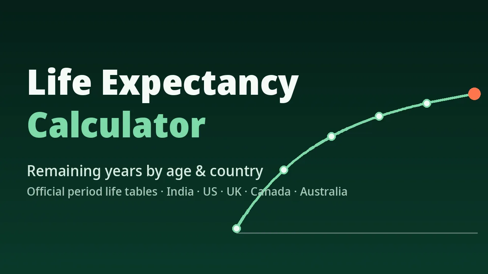

Biological & Health · Free Online Tool
Life Expectancy Calculator
Explore average life expectancy and estimated remaining years of life using published population statistics. Choose a country, enter an age and select the demographic group — the calculator reads your result directly from that country's official life table, with the source and reference period shown alongside it.
✓ Published life-table data✓ Browser-side calculation✓ Responsive layout✓ No sign-up
Written and maintained byNavjeet KambojAge Calculator Lab author & editor

Calculation engine
Use the Life Expectancy Calculator
Calculator inputs are processed locally by the JavaScript included with this static page.
Coverage note: India and Canada publish all-sexes life tables. The United States, United Kingdom and Australia publish female and male tables only, so "All sexes combined" is unavailable for those countries.
Result
Your result will appear here
ReadyEnter the required values
Review the inputs and select Calculate.
How it works
Get your life expectancy estimate in four clear steps
Three inputs, one published life table, and a result that states its source. The steps below explain what each choice changes — and what it does not.
1
Choose the population
Pick the country or region first. Every result comes from that country's own official life table, and mortality patterns differ between populations, so the country changes the answer, not just the label.
2
Enter your current age
Use your age in completed years. The calculator reads the value for that exact age from the table, or interpolates between the two nearest published ages in an abridged table such as India's.
3
Select the demographic group
Life tables are published by sex because mortality differs between groups. Choose Female or Male, or All sexes combined where the source publishes it — India and Canada on this page.
4
Read an average, not a deadline
The result is the average remaining years for everyone in that population group at your age. Roughly half of the group lives longer than the average and half shorter — it frames the statistics, it does not schedule anything.
Interpreting the result
What your life expectancy result means
A life expectancy result is a population statistic with a named source, a reference period and clear limits. These four points explain how to read it responsibly.
1
The headline number
Estimated remaining years — the average additional years a person of your age would live if the mortality rates in the table's reference period stayed unchanged throughout their life.
2
Estimated average age at death
Your current age plus the remaining years. It is shown only as a statistical average for the group; this calculator never predicts an individual's date of death.
3
Where the number came from
Each result names its country, source life table, reference period and demographic group, so you can trace it back to the official publication listed in the Data sources section below.
4
The limit to keep in mind
Life expectancy is an average across a whole population. Your own outcome also depends on individual circumstances this calculator deliberately does not model, and future mortality rates may differ from the reference period.
Calculation method
How is life expectancy calculated?
Statisticians build life tables from registered deaths and population counts, age by age. From those tables comes the only figure this calculator uses: remaining life expectancy at each age.
LookupRemaining life expectancy (ex) at your age, from the published period life tableResultCurrent age + ex = estimated average age at death
Why the subtraction shortcut fails: in India's table, female life expectancy at birth is 72.8 years. Subtracting 30 gives 42.8 years — but a woman who is already 30 has survived the higher-risk early years, so her group's true remaining average, read from the table, is 46.3 years. The gap between the shortcut and the table value is exactly why age-specific data matters.
Worked example
Worked example: a 30-year-old woman in India
These are the calculator's real inputs and outputs, using the SRS Abridged Life Tables 2020–24 for India — no illustrative or invented figures.
India · Female — the female life table in the SRS Abridged Life Tables 2020–24.
30 years, entered in completed years.
46.3 years — the published e₃₀ value for Indian women in the 2020–24 table.
30 + 46.3 = 76.3 years, as a population average for this group — not a personal prediction.
The same effect appears in every table on this page. An Australian man aged 65 has 20.1 expected years remaining, taking him to an average age of 85.1 — beyond Australian male life expectancy at birth of 81.1 years, because he has already reached 65.
Population context
What factors affect life expectancy?
Life-expectancy differences between populations are studied through broad social, environmental and healthcare factors. They explain why tables differ between countries and groups — they are not inputs here, and this calculator never converts them into bonus or penalty years for a person.
1
Healthcare access
Populations with accessible preventive care, vaccination, maternal care and timely treatment of serious illness record lower mortality at most ages, which raises the averages in their life tables.
2
Physical activity and habits
At population level, activity patterns and habits such as smoking are associated with different mortality rates. Researchers measure these associations across groups; they cannot be turned into exact extra years for an individual.
3
Living and working conditions
Clean water, sanitation, housing quality, road safety and occupational hazards all shift a population's age pattern of deaths, and therefore its published life expectancy.
4
Social and economic conditions
Income, education and social support correlate with mortality differences both between and within countries — one reason official tables are published for specific populations rather than one global figure.
Country comparison
Life expectancy by country
Reference values from the same official life tables the calculator uses. Each row keeps its own source's reference period, because national statistics offices publish on different cycles — read the period column before comparing rows.
| Country | At birth — female | At birth — male | Remaining at 60 — female | Remaining at 60 — male | Reference period |
|---|---|---|---|---|---|
| India | 72.8 | 68.7 | 19.8 | 17.5 | 2020–2024 |
| United States | 80.2 | 74.7 | 24.1 | 21.1 | 2022 |
| United Kingdom | 83.0 | 79.1 | 25.4 | 22.8 | 2022–2024 |
| Canada | 83.9 | 79.5 | 26.5 | 23.5 | 2022/2024 |
| Australia | 85.1 | 81.1 | 27.2 | 24.2 | 2022–2024 |
Where the source also publishes an all-sexes table, life expectancy at birth is 70.6 years for India (2020–2024) and 81.7 years for Canada (2022/2024). Differences between rows reflect each population's recorded mortality pattern in its reference period, not the quality of any individual lifestyle.
Key terms
Life expectancy, lifespan and related terms
These terms are often used interchangeably in everyday language, but they describe different concepts. Keeping them separate makes the calculator's result easier to interpret.
| Concept | Meaning |
|---|---|
| Life expectancy | The average number of years a defined population is expected to live under specified mortality assumptions. |
| Lifespan | The actual length of an individual's life, or the maximum length of life recorded for a species. |
| Life expectancy at birth | The average years a newborn is expected to live if mortality rates at each future age match the reference period. |
| Remaining life expectancy | The average additional years expected for a person who has already reached a specified age — the value this calculator reports. |
| Healthy life expectancy | The average years expected to be lived in good health. It needs health-status data this calculator does not use. |
| Longevity | A broad term for long life and survival to older ages; not a single statistic. |
Who should use this calculator?
This calculator suits anyone exploring how life expectancy is reported, comparing population statistics between countries, or adding demographic context to study and research. Because it works from population averages, it should not be used for medical diagnosis, individual prognosis, insurance underwriting, or any decision that needs a statement about one particular person's health or future.
Continue calculating
Related calculators
Choose another focused tool when the underlying question changes.
Learn the method
Related practical guides
Background reading on age concepts and how exact ages are worked out.
Common questions
Life Expectancy Calculator FAQ
Answers about method, data sources, privacy, boundaries and responsible interpretation.
What is a life expectancy calculator?
A life expectancy calculator uses demographic statistics from a published life table to estimate average remaining lifespan for a population. This one reads the remaining life expectancy (e_x) for your selected country, age and demographic group directly from official period life tables, so the reliability and meaning of the result depend on that data and its reference period.
How do I calculate my life expectancy?
Select your country or region, enter your current age, and choose an available demographic group, then select Calculate. The calculator looks up the age-specific value in the underlying life table. Between published ages in an abridged table it interpolates linearly, and it says so in the methodology.
Is life expectancy the same as lifespan?
No. Lifespan is the total duration of one individual's life. Life expectancy is a statistical average calculated for a population under defined mortality assumptions, so it describes the group, not any single person's outcome.
Does life expectancy change as you get older?
Yes. Remaining life expectancy is calculated for people who have already survived to a particular age, so it falls by less than a year for each year of age. That is why it must be read from an age-specific life table rather than inferred by subtracting your age from life expectancy at birth.
Can a life expectancy calculator predict my date of death?
No. A population-based calculator cannot predict an individual's date of death. The estimated average age at death shown here is current age plus expected remaining years — a statistical average under the table's assumptions, not a personal prediction.
Why does life expectancy differ between countries?
Countries have different mortality patterns shaped by healthcare access, living and working conditions, sanitation, education, income and other population characteristics. Each table on this page comes from that country's own official statistics, with its reference period shown alongside the result.
What is the difference between period and cohort life expectancy?
Period life expectancy uses the mortality rates observed in one specified period and assumes they stay unchanged. Cohort life expectancy follows a real birth cohort through its lifetime, including projected future improvements in mortality. This calculator uses period life tables, which are the estimates official statistics publish most widely.
Does this calculator consider lifestyle and medical history?
No. It is a population life-table calculator, not an individualized medical assessment. It has no validated individual prediction model, so it does not add or subtract years for smoking, exercise, conditions or family history.
Where does the calculator get its data?
From official period life tables: the SRS Abridged Life Tables 2020–24 for India, the Social Security Administration's 2022 period life table for the United States, the ONS National Life Tables 2022–2024 for the United Kingdom, Statistics Canada's life tables for 2022/2024, and the ABS Life Tables 2022–2024 for Australia. The full source list with reference periods is in the Data sources section of this page.
Is the life expectancy estimate guaranteed to be accurate?
No. It is a statistical estimate based on the mortality rates of the reference period. Actual lifespans vary widely around the average, and future mortality rates may differ from the period the table describes.
Data transparency
Data sources and methodology notes
Every value in the calculator and in the comparison table above comes from one of these official publications. No placeholder, estimated or third-party figures are used.
| Country | Source publication | Reference period | Ages covered | Groups published |
|---|---|---|---|---|
| India | SRS Abridged Life Tables — Office of the Registrar General, India | 2020–2024 | 0–85 (abridged) | All sexes, female, male |
| United States | Period Life Table, Table 4.C6, Annual Statistical Supplement — Social Security Administration | 2022 | 0–119 | Female, male |
| United Kingdom | National Life Tables — Office for National Statistics | 2022–2024 | 0–100 | Female, male |
| Canada | Life Tables, Table 13-10-0114 — Statistics Canada | 2022/2024 | 0–110 | All sexes, female, male |
| Australia | Life Tables — Australian Bureau of Statistics | 2022–2024 | 0–100 | Female, male |
Method notes. All five are period life tables: they summarise the mortality rates of their reference period and assume those rates continue unchanged. In abridged tables (India), values between published ages are calculated by linear interpolation between the two nearest published ages, and this is the only calculation the tool performs beyond reading the table. At a table's highest published age, the value shown is that age group's published figure. Results are rounded to one decimal place. Where a source does not publish an all-sexes table, the calculator says so instead of estimating one.
Disclaimer. This calculator is provided for general education and information only. Its results are population averages from the reference periods listed above; they are not medical advice, a diagnosis, an individual prognosis, or a prediction of any person's lifespan, and they must not be used for insurance, legal or clinical decisions. For personal health questions, consult a qualified medical professional.
About the author
Navjeet Kamboj
Navjeet Kamboj is the author and editor of Age Calculator Lab. He focuses on making age, date, milestone and planning calculations easier to understand through clearly explained methods, practical examples and responsible limitations.